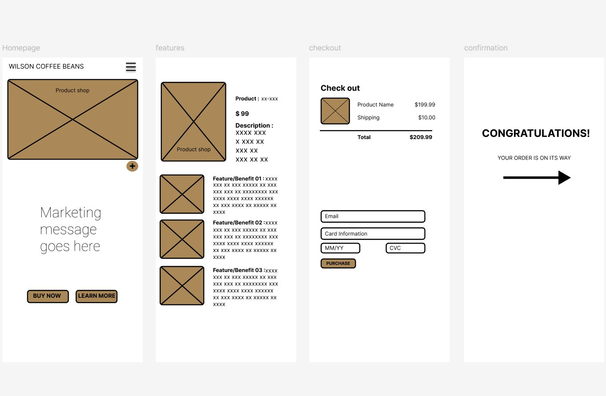

Wireframes, brand guideline documents, social media kits, pitch decks, and e-commerce flows — production-ready systems designed to keep brands consistent.

Full e-commerce UX flow: Homepage, product detail, checkout with payment form, and order confirmation. Designed in Figma.
Complete brand guideline documents — logo usage, color specs, typography systems, spacing, and do's/don'ts.
Template sets for Instagram posts, stories, carousels, and reels covers. Consistent branding across every platform.
Presentation templates for investor pitches, client proposals, and internal strategy decks.
User flow mapping, mobile wireframes, and interactive prototypes.
Press-ready media packages with brand assets, bios, high-res logos, and key stats.
Tone of voice guides, content style sheets, and messaging frameworks.